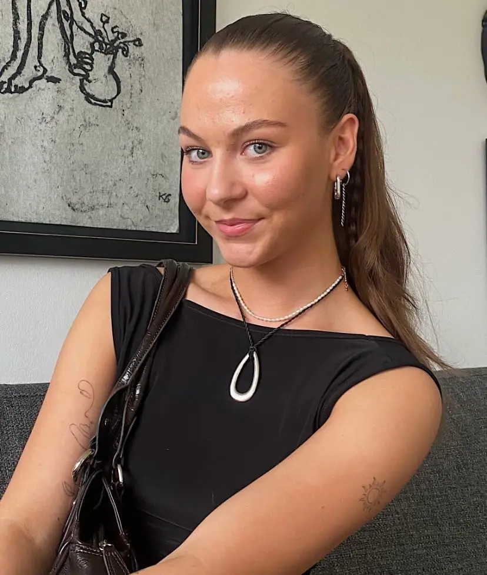

Om Mig
Jeg er en 22-årig multimediadesign studerende, som ønsker at bruge sin uddannelse til at skabe nye webdesigns og grafisk design - og synes at KEA er en god start for fremtiden. Jeg er opvokset i Island, men flyttede her til København i august sidste år. Jeg gik på Idræthøjskole i Vejle i foråret 2022, og blev forelsket i dansk kultur og grafisk design.